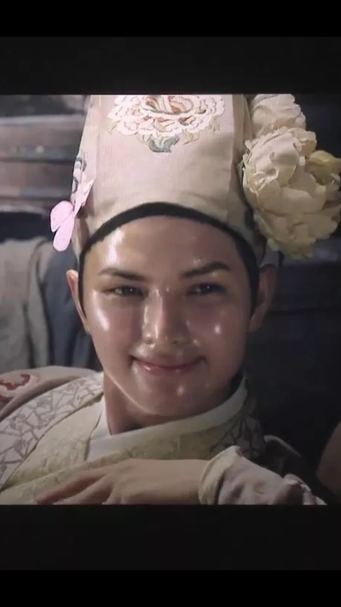
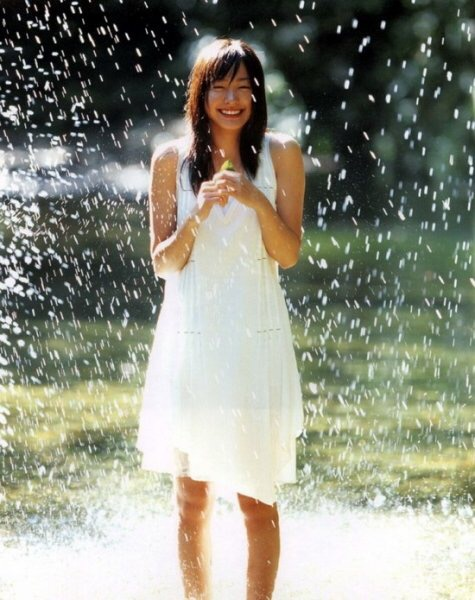
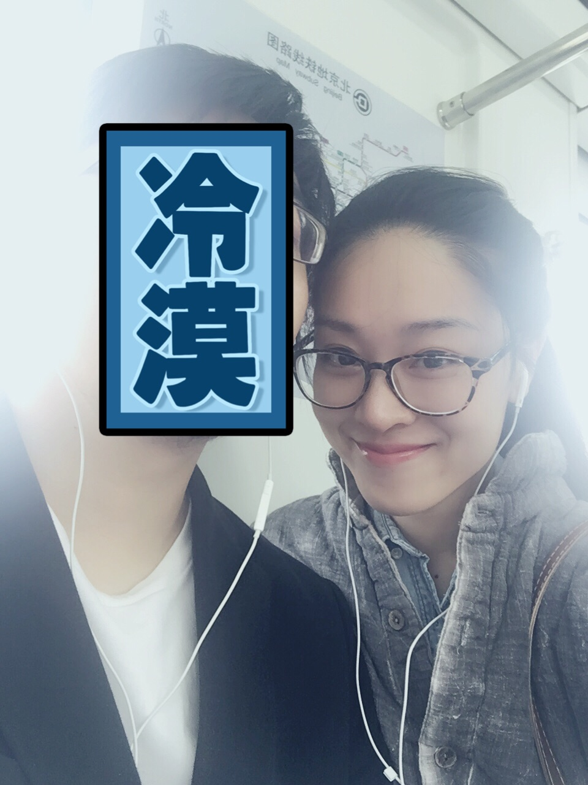
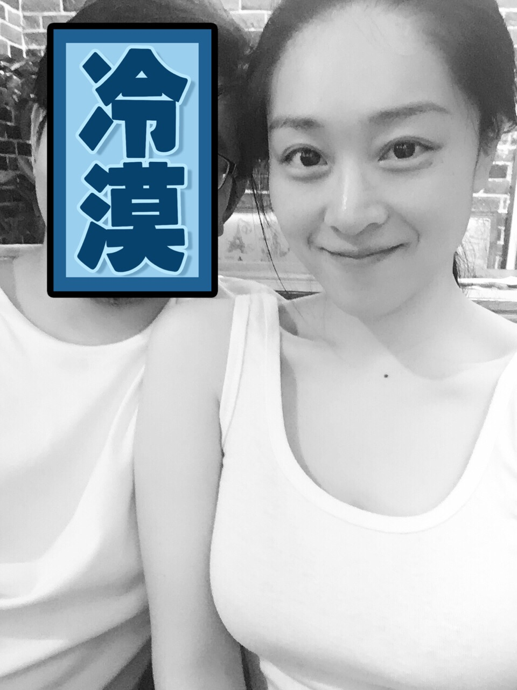
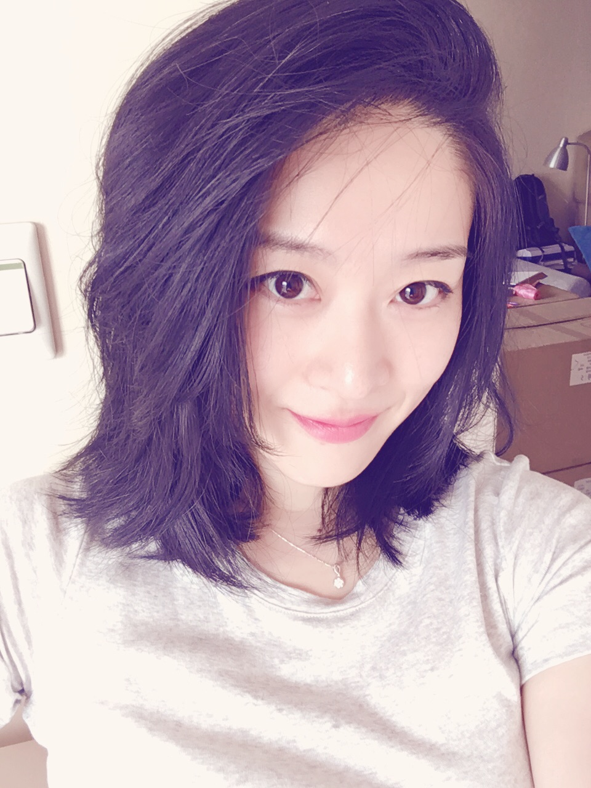
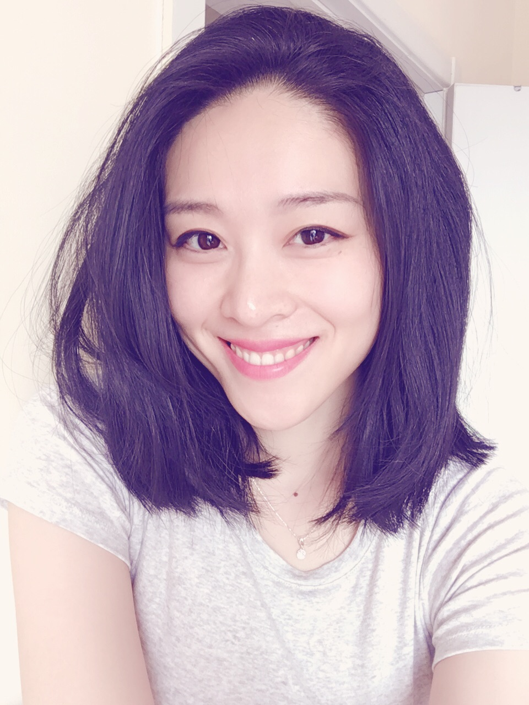

正文:
首先是笑的时候要运动眼睛下面的肌肉，可以简单的理解成眯眼，当你微微眯眼的时候笑起来就很真挚，如果嘴巴笑了，眼睛没眯，无论怎么看，都是皮笑肉不笑，

这就是典型的皮笑肉不笑，眼睛没有笑，反观随便找个笑起来漂亮的人，ta的眼睛都不会是完完全全的圆睁，而是眼周的肌肉会微微用力。找个夸张的栗子，新恒结衣的灿烂大笑，你放大这张图，隐约可以看到她眼睛下面颧骨上方的肌肉是在用力的。感受到这个用力的感觉，对着镜子试一试，你可以只用嘴唇附近的肌肉完成一个皮笑肉不笑，却不能在动用眼睛下面那块肌肉的时候嘴角保持平直状态，也就是说在你动用那块肌肉的时候，你一定是可以笑出来的。

然后是嘴巴。
抿嘴笑的时候嘴唇要稍微收紧一点，不要完完全全的放松，那样子容易显得扁嘴而且嘴唇很厚。
这个就是完全放松的笑，嘴巴扁整个笑容有点塌。

这是微微用力的笑，扁嘴的情况就不明显了。


当你露齿笑的时候，也千万不要完全放松嘴唇的笑，否则你的嘴唇就是摊在你的牙齿上的，然后你的笑容就…很容易糊了…
微微收紧的嘴唇露齿笑的时候看起来也会更加俏皮，摊在牙上的…除非牙齿很美而且牙床的弧度比较平，不然不要轻易尝试。

其实刚开始会不习惯，然后等慢慢习惯了…我平时笑起来都会收嘴唇。贴个无聊玩小咖秀的视频，视频看比较明显，我笑起来的时候上唇是收起来的。
http://v.xiaokaxiu.com/v/YYnf8ymatn9e1SnfdtezQQ__.html------------------------------------------------------
感谢各位观看，夏天来啦～你需要一条吸汗透气的内内～所以如果有需要买内裤的兄弟，爷们儿，帅哥，小弟，欢迎来我店看看～ 质量有保证～穿过的都说好～
https://somebush.taobao.com/